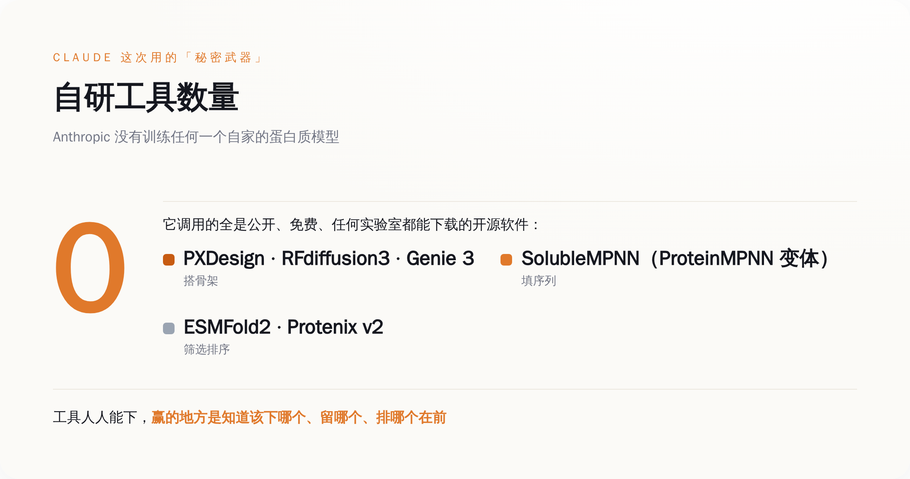
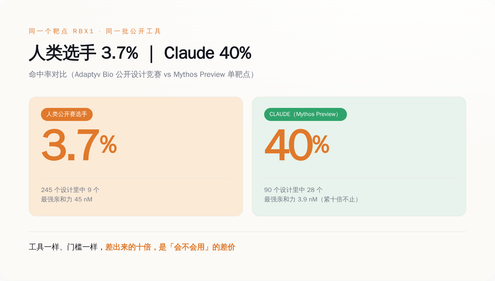
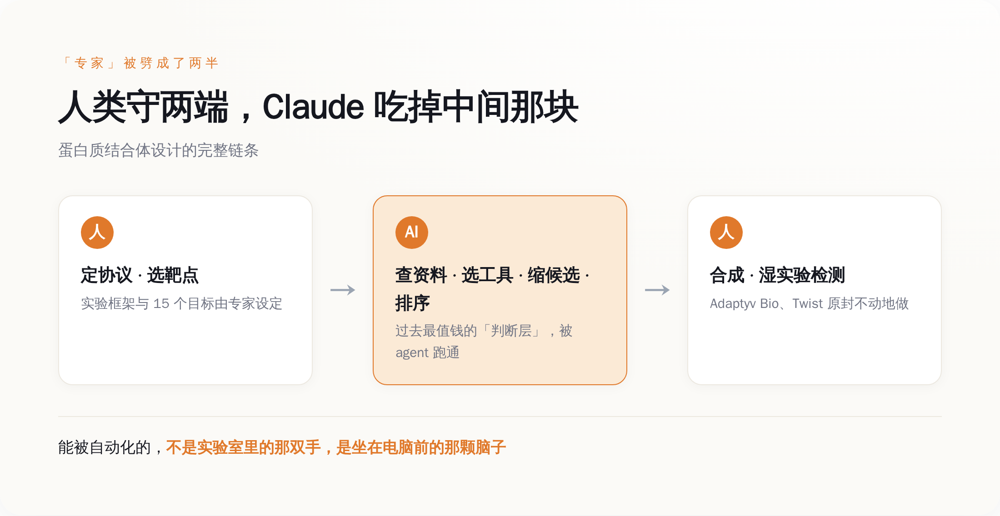

导语
先说结论，省得你划走：这条新闻真正吓人的地方，不是「AI 会设计蛋白质了」，而是它设计蛋白质用的东西，你电脑上也能装。
2026 年 8 月 18 日，Anthropic 甩出一份技术报告，说自家的 Claude 自主设计了一批蛋白质结合体，扔进真实的湿实验室里合成、检测，结果 15 个靶点里有 14 个至少命中了一个能用的设计。你可能对这个数字没概念，那我换个说法：这一行的老师傅们平时的命中率是一到一成半，Claude 干到了两成二到三成半。
然后我去翻它到底用了什么秘密武器。翻完人傻了。
一个秘密武器都没有。
生成 Prompt
an abstract minimalist visualization of a small protein binder molecule locking precisely onto a large target protein surface, glowing connection point, floating open-source software toolboxes and code fragments in the background, flat design, tech illustration, single orange accent color on cool grey palette, no text, no labels, clean white background
一、先把牛皮吹破一半，剩下那一半才值得看
这种新闻的标准剧本，你我都熟。第一天是「AI 攻克蛋白质设计，人类攻克疾病指日可待」，第二天是「所以某某癌症要被治好了？」，第三天股票涨一波，第四天没人记得。
所以我们先按 Anthropic 自己说的来，把话说死。
Anthropic 在报告里白纸黑字写了一句：结合体不是药（protein binders are not drugs）。做出一个能牢牢咬住目标蛋白的分子，只是新药研发这条几公里长的路上的第一步。后面还有能不能进细胞、有没有毒、身体会不会一脚把它踢出去、能不能量产、临床三期烧不烧得起钱——每一关都能让 99% 的候选分子当场去世。所以谁要是拿这条新闻告诉你「Claude 要治好阿尔茨海默了」，你可以直接拉黑他，他不是蠢就是想骗你接盘。
把这层泡沫戳破之后，剩下的那点硬东西，反而更有意思。
它到底做了什么，得说清楚。这次的活儿叫「de novo 蛋白质结合体设计」，翻过来就是：给你一个靶点蛋白（比如某个跟癌症、跟老年痴呆有关的蛋白），你要从零画出一个全新的、自然界里不存在的小蛋白，让它能精准地贴上去、咬住。这活儿难就难在「从零」——不是照着已有的抄，是凭空造一把只配这一把锁的钥匙。
这一批，Claude 用两个模型（Claude Opus 4.8 和一个叫 Mythos Preview 的预览版）在 15 个有临床价值的靶点上跑。这些靶点不是随便挑的软柿子：PD-L1，癌症免疫治疗里最核心的那个刹车蛋白；TREM2，跟阿尔茨海默死磕的；TNFα，年销一度冲到两百亿美元的修美乐（Humira）咬的就是它；EGFR，肿瘤圈的老熟人。硬骨头。
跑下来，一共交出 1320 个设计，湿实验确认了 354 个真的能咬住。命中率我给你摆全：多臂并跑的 48 小时里，Opus 4.8 是 22.6%，Mythos Preview 是 26.7%；等到让 Mythos Preview 单挑一个靶点、给它 24 小时，命中率飙到 35.1%。而这一行公开承认的平常水平，是 10% 到 15%。
数字很漂亮。但漂亮的数字满地都是，我不是来给你念成绩单的。我关心的是另一个问题——它凭什么？
二、我去查它的秘密武器，结果查出一张免费软件清单
一般人的第一反应是：Anthropic 肯定偷偷练了个专门搞生物的超级模型。这么想很合理，也很符合我们对「大厂放大招」的想象。
现实是，没有。
Anthropic 没有训练任何一个自己的蛋白质模型。Claude 在这件事里的身份，说穿了是个「会自己动手装软件、自己读说明书」的操作员。它干的活儿是：拿到靶点之后，自己去查这个靶点的资料，自己决定该调哪些工具，自己把工具装上、跑起来，再从跑出来的一堆候选里自己挑、自己排序，最后把选中的序列打包，交给实验室去合成。
那它调的都是些什么工具？我把清单抄给你，你感受一下这个「秘密」有多秘密——
搭蛋白质骨架用的：PXDesign（贡献了 358 个设计）、RFdiffusion3（267 个）、Genie 3（185 个）、FreeBindCraft（135 个）、BoltzGen（134 个）、RFdiffusion（118 个）、Proteina-Complexa（100 个）。往骨架上填氨基酸序列，主要靠 SolubleMPNN，这是知名工具 ProteinMPNN 的一个变体。最后筛选和排序候选，用的是 ESMFold2、ESMFold2-Fast 和 Protenix v2。
这张清单里，没有一个是 Anthropic 家的。全部是这个领域早就摆在那儿、公开、免费、任何一间实验室、任何一个研究生都能下载来用的开源软件。

这意味着什么？意味着这场胜利里，「工具」这一项的贡献，理论上等于零。因为这些工具，跟 Claude 竞争的每一个人类专家，桌上都有一套一模一样的。大家用的是同一批锤子、同一批钉子。
那 Claude 到底赢在哪了？
三、同一个公开赛，同样的工具，它是人类选手的十倍
光说命中率高，你可能觉得是 Anthropic 自己关起门来跟自己比，那不算数。所以这次最狠的一刀，是它敢去跟人类同台。
负责做湿实验验证的公司叫 Adaptyv Bio，它之前办过一个公开的蛋白质设计竞赛，全世界的研究者都能报名，用的就是前面那批开源工具，去挑战一个叫 RBX1 的靶点。人类选手们下场，最后的命中率是 3.7%。
Anthropic 让 Mythos Preview 单挑同一个 RBX1，命中率 40%。
我怕你划得太快没算过来，我再摆一组更具体的：面对 RBX1，Claude 交了 90 个设计，中了 28 个；那场人类公开赛，全体选手一共交了 245 个设计，中了 9 个。它用三分之一的产量，中出了三倍的结果。而且不只是「能咬住」，是「咬得死死的」——Claude 设计出的最强那个结合体，亲和力做到了 3.9 纳摩尔，而公开赛冠军是 45 纳摩尔（这个数字越小咬得越紧，3.9 比 45 强了十倍不止）。
同样的靶点，同样能下载的免费工具，人类是一批，Claude 是一个。差出十倍。

到这一步，那个真问题就藏不住了。
如果工具是免费的、公开的、大家都有的，那 Claude 多出来的那十倍，只可能来自一个地方：知道该用哪个工具、知道哪个候选该留哪个该扔、知道该按什么顺序把它们排出来。
这套东西，过去有个统一的名字，叫「经验」，或者叫「专家的判断力」。它不写在任何一个软件的说明书里，它长在一个干了十几年的老师傅脑子里。你把 RFdiffusion 和 ESMFold 免费送给一个刚入行的研究生，他也做不到 40%，因为他不知道这七八个骨架工具里这次该信哪个，不知道跑出来一千个候选里哪几十个值得往下走。
Claude 这次真正干成的事，是把这套「长在脑子里、说不清道不明」的判断，跑通了一遍。
四、专家这个职业，被 Claude 当场拆成了两半
我们过去理解一个「专家」，是把他当成一个不可分割的整体：他既有判断力，也会动手。你请他来，是这两样一起买的。
Claude 这次干的事，等于当着所有人的面，把「专家」这个词，沿着中间劈开了。
一半是判断层：查资料、定策略、在一堆工具里选、在一堆结果里挑、排优先级。另一半是操作与验证层：真的把分子合成出来、真的放进试管里测它咬不咬得住。
你去看这次的分工就明白了。人类专家保留了什么？他们定下了整个实验的协议和框架（agent 是在专家设定的 protocol 下跑的），他们挑定了那 15 个靶点，以及——最关键的——他们守住了湿实验那一端：真正的合成和检测，是 Adaptyv Bio 和 Twist Bioscience 两家专业的合同实验室干的，而且是拿到 Claude 的设计后原封不动地做，一个字没改。
那 Claude 吃掉了哪一半？正中间那一整块判断层。查靶点、选工具、缩候选、做排序——这些过去被认为最值钱、最需要「悟性」、最不可能被自动化的活儿，被一个通用大模型当成一个多步骤的软件任务，跑完了。

这件事之所以让我后背发凉，是因为它根本不只关生物学的事。
把「蛋白质设计」这四个字换掉，换成任何一个「有一套公开的专业软件 + 一套只在老师傅脑子里的使用经验」的行业，这个故事一字不改都成立。做芯片版图的 EDA 工具是公开的，会不会用是手艺；做建筑结构的有限元软件是公开的，会不会调参是经验；律师检索判例的数据库是对所有人开放的，知道搜什么、信哪条是本事；财务建模的 Excel 谁都有，会不会搭那个模型才是饭碗。
我们这代人被反复教育的一句安全咒语是：「别怕 AI，学会用工具的人不会被淘汰，会用 AI 的人淘汰不会用的人。」这句话现在得改了。因为 Claude 这次证明的恰恰是——当工具本身是公开的，「会用这个工具」这件事本身，可以被一个通用模型学走，然后免费送给所有人。到那天，「我会用而你不会」这句话背后的溢价，就开始蒸发了。
五、设计变便宜之后，钱会往哪儿流
拆穿一件事的成本结构，最后总得落到「那谁赚钱」上，不然都是空谈。
这局里有两家公司很值得看：Adaptyv Bio 和 Twist Bioscience。它们干的是最不性感的活儿——把别人设计好的蛋白质，真的用生物手段造出来，再放进试管里测一测到底行不行。设计端现在被 AI 摁到地上摩擦、成本无限往下掉，可「造出来 + 测一测」这一端，还得靠真实的细胞、真实的试剂、真实的时间。你 AI 一秒钟能吐一万个设计，但每一个都得有人真金白银地去合成、去检测，才知道是不是吹的。
设计越不值钱，验证就越值钱。水从高处流到低处，钱从被自动化的环节流到还没被自动化的环节。这也是为什么 Anthropic 这次要把湿实验外包出去——它自己不趟这摊浑水，它要的不是当个药厂。
那 Anthropic 到底图什么？说出来一点都不含蓄。
它把这次的全部东西——所有的设计、所有喂给 agent 的原始 prompt、所有的湿实验测量数据——一股脑全公开传到了 Hugging Face 上，谁都能下。一家公司，做出了这么亮眼的成果，转头把配方全给了你。反常识吧？
不反常识。因为 Anthropic 卖的从来不是这批蛋白质，甚至不是这次的方法。它卖的是一句广告词，而这次实验就是这句广告词的证据：你那套需要多年训练、外人插不进手的专业判断，一个通用模型加一堆免费工具，就能跑到你的两三倍。 全套数据公开，是为了让你没法说它造假——它要的就是你信这句话，信到愿意为「让 Claude 当你的专家」去付订阅费。
六、你该睡不着的那部分
说回开头那个吓人的地方。
这条新闻真正的分量，不在「AI 会造蛋白质」——那是给外行看的标题。它的分量在于：Claude 没有发明任何工具，它用的东西你也下得到，它赢的地方是知道该怎么用。而「知道该怎么用」，恰恰是过去几乎所有专业人士，用来解释「我为什么值这个价」的那个理由。
工具早就免费了，稀缺的一直是用工具的判断。Claude 这次不是造出了什么新武器，它只是把最后这道护城河——「会用」——也抽干给你看了一遍。
至于抽到你这行没有，这次没有不代表下次没有。你可以先去数数，你的本事里，有多少是「我会用这套软件而别人不会」。这个数字，就是你该开始睡不着的那部分。